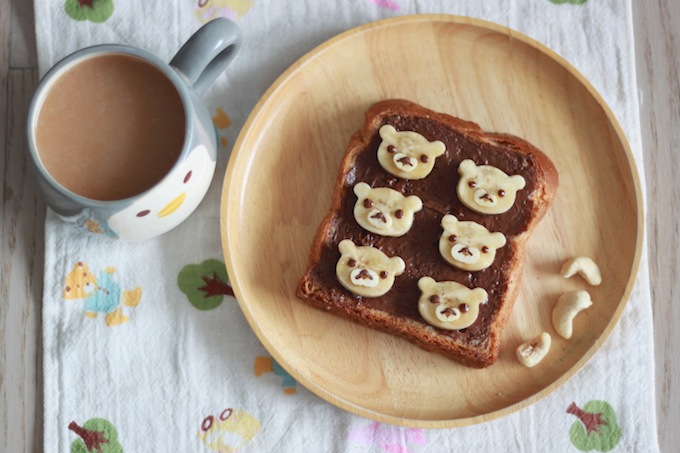

Rilakkuma Choco Banana Toast
Source: yukitchen.com
Ingredients
- 2~3 tbsp Nutella
- 1 banana
- 3~4 cashew nuts
- 1 slice whole wheat toast
Steps
- Cut the cashew nuts and a banana.
- Make 6 banana bears.
- Get the Nutella ready.
- Gently place your 6 bears on toast.
- Time to get your artistic side on.
- Done.
Thinly sliced cashew nuts are going to be Rilakkuma’s mouth. Make sure you slice them perfectly round.
A cookie cutter purchased from a 100-yen store worked pretty well.
Toast a piece of whole wheat bread and cover it with Nutella. Then pour some Nutella in a squeezer for drawing Rilakkuma’s face.
Place the thinly cut cashew nuts for Rilakkuma’s mouth, then start drawing his nose and eyes using the squeezer you made earlier.
Source: yukitchen.com